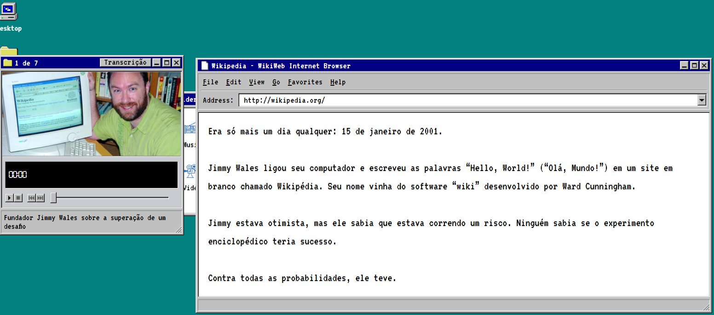
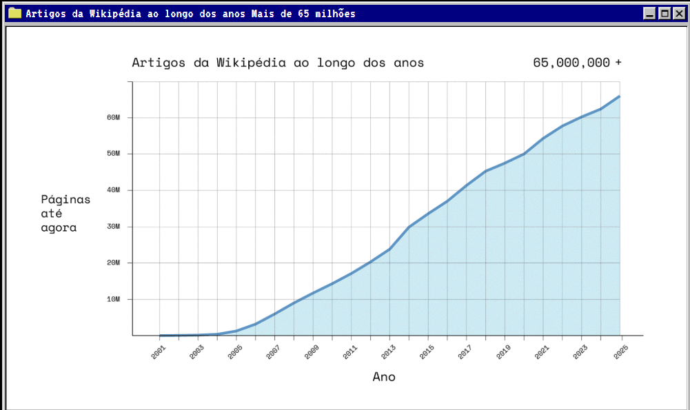
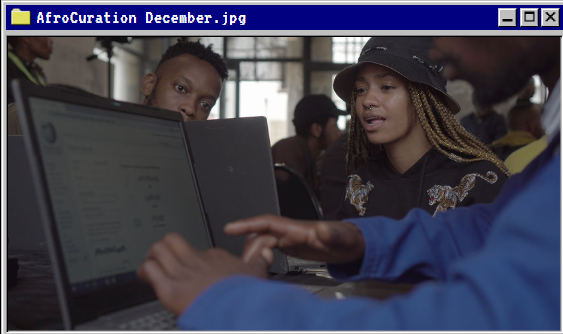

Sobre a Wikipédia
Wikipédia é uma enciclopédia online e colaborativa, gratuita e escrita por voluntários. É uma das maiores enciclopédias da história da humanidade.
Fundada em 2001 por Jimmy Wales e Larry Sanger, a Wikipédia cresceu rapidamente, tornando-se uma fonte popular de informações em diversos idiomas. Qualquer pessoa com acesso à internet pode editar seus artigos, o que contribui para a diversidade e atualização constante do conteúdo.
A Wikipédia é mantida pela Wikimedia Foundation, uma organização sem fins lucrativos. Seu modelo colaborativo permite que especialistas e entusiastas compartilhem conhecimento, tornando-a uma ferramenta valiosa para estudantes, pesquisadores e o público em geral.

Crescimento da Wikipédia
Desde sua criação, a Wikipédia experimentou um crescimento exponencial. Em poucos anos, passou de um pequeno projeto para uma das maiores fontes de informação online. Atualmente, a Wikipédia possui milhões de artigos em centenas de idiomas, cobrindo uma vasta gama de tópicos.
O crescimento da Wikipédia pode ser atribuído à sua natureza colaborativa e ao acesso aberto. Voluntários de todo o mundo contribuem com artigos, edições e atualizações, garantindo que o conteúdo permaneça relevante e atualizado. Além disso, a popularidade da internet e o aumento do acesso à informação digital impulsionaram ainda mais o crescimento da plataforma.
Hoje, a Wikipédia é amplamente utilizada por estudantes, educadores e o público em geral como uma fonte confiável de informações. Seu impacto na disseminação do conhecimento é inegável, tornando-a uma ferramenta essencial na era digital.

Colaboradores
Os colaboradores da Wikipédia são indivíduos voluntários que dedicam seu tempo e conhecimento para criar, editar e manter os artigos da enciclopédia. Eles vêm de diversas origens, incluindo estudantes, profissionais, especialistas em várias áreas e entusiastas do conhecimento.
Esses colaboradores desempenham um papel crucial na qualidade e precisão do conteúdo da Wikipédia. Eles seguem diretrizes rigorosas para garantir que as informações sejam verificáveis, imparciais e bem referenciadas. A comunidade de colaboradores também participa de discussões e revisões para resolver disputas e melhorar os artigos existentes.
A diversidade dos colaboradores contribui para a riqueza do conteúdo da Wikipédia, permitindo que diferentes perspectivas e conhecimentos sejam representados. Essa colaboração global é um dos principais fatores que tornam a Wikipédia uma fonte confiável e abrangente de informações.
